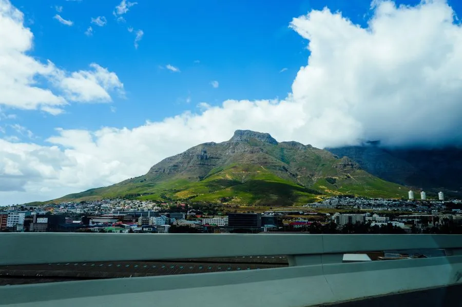
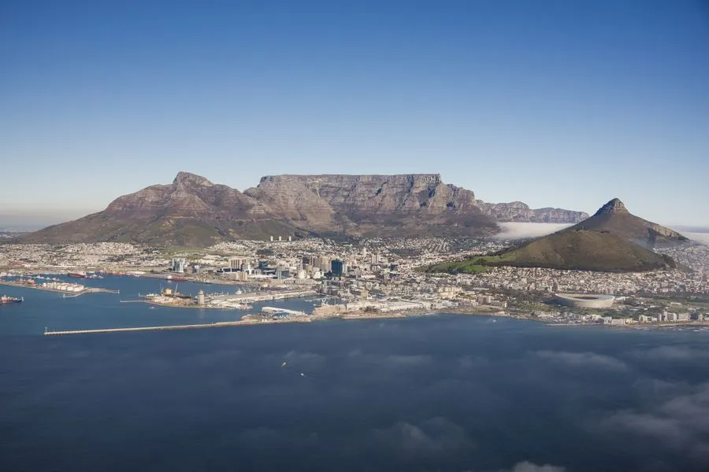
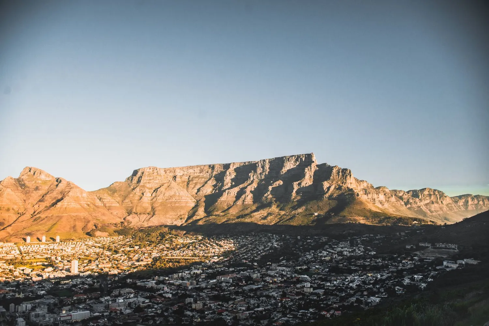

Montanha, oceano e vinícolas centenárias convivendo dentro dos limites de uma única cidade.
Poucas cidades do mundo concentram tanta geografia dramática em tão pouco espaço. A Table Mountain se ergue direto do centro urbano, os vinhedos começam a poucos minutos dali e os pinguins nadam na mesma baía que recebe surfistas.
Cidade do Cabo funciona como base para explorar toda a Cape Winelands e a Península do Cabo, mas também se sustenta sozinha, com uma cena gastronômica que rivaliza com qualquer capital europeia e uma luz que os fotógrafos locais chamam de única no continente.
O teleférico rotativo sobe mil metros em poucos minutos, mas o horário certo faz toda a diferença. Organizamos a subida no fim da tarde, quando a luz dourada ilumina a cidade e o Robben Island lá embaixo, com tempo de sobra para descer já com as estrelas aparecendo.
A uma hora do centro, Stellenbosch e Franschhoek guardam vinícolas com mais de trezentos anos, arquitetura colonial holandesa intacta e alguns dos melhores restaurantes do hemisfério sul. Um dia inteiro de degustações privativas entre vinhedos é parte obrigatória do roteiro.
Uma colônia de pinguins-africanos vive em praias rochosas a menos de uma hora da cidade, convivendo com banhistas em um dos poucos lugares do mundo onde isso acontece. Visitamos cedo, antes dos ônibus de turismo, para observar os filhotes sem multidão.
A ponta onde dois oceanos se encontram entrega penhascos dramáticos e babuínos soltos pela estrada. Fechamos o dia com jantar num restaurante de frutos do mar em Hout Bay, com o barco pesqueiro do dia ainda descarregando na doca ao lado.


